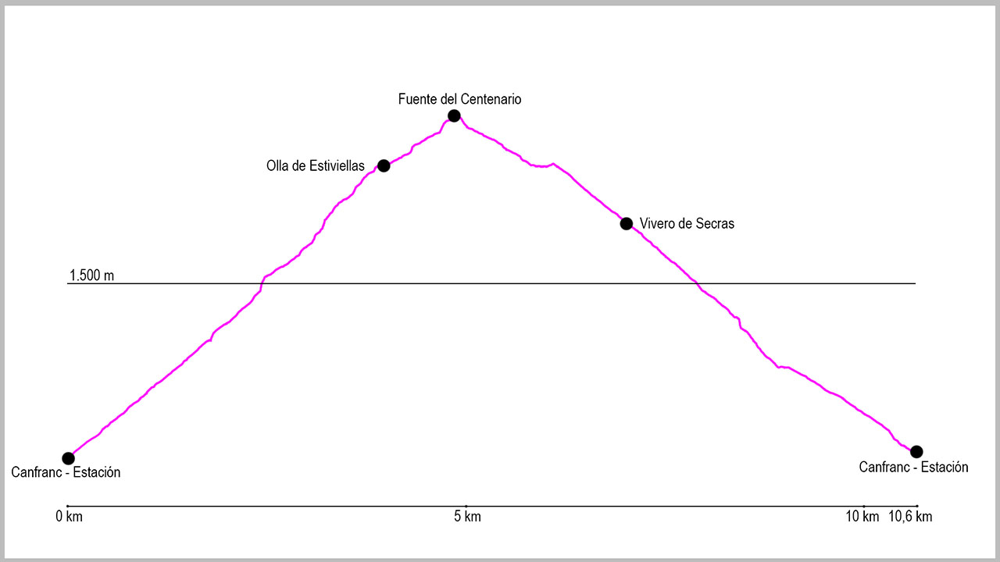

Desde el puente de la Estación de Canfranc, cruzaremos la carretera hacia una calle que sale justo enfrente y que sube en dirección noreste. Al final de dicha calle giraremos a nuestra izquierda, para tras unos 200 metros girar a nuestra derecha en dirección a las piscinas municipales. Justo al llegar a ellas volveremos a girar a nuestra izquierda y en apenas 50 metros tomaremos ya el camino principal de subida.
Nada más empezar el camino tiene un cruce a nuestra derecha que obviaremos para seguir de forma ascendente. Este es un camino cómodo y fácil que casi en su totalidad transcurre por bosque, primero de coníferas y luego de frondosas, tanto en la subida como en la bajada.
A lo largo de la subida tendremos tres cruces que saldrán a nuestra izquierda para ver diferentes miradores (si decidimos visitar alguno de ellos tenemos que volver siempre al camino principal) y poco después de pasar la fuente del burro tenemos también una bifurcación a nuestra derecha, que tampoco haremos caso y seguiremos a nuestra izquierda.
El camino prosigue cómodamente hasta salir del bosque, donde continúa por una zona con alguna piedra hasta llegar, tras unas pocas curvas más a la Cola del Caballo.
Seguiremos en este punto nuestra ascensión por un cómodo camino que tras un kilómetro aproximadamente nos llevará a la Olla de Estiviellas. Justo al llegar encontraremos un cruce a nuestra derecha que obviaremos y seguiremos para atravesar el barranco de Estiviellas, y tras unos metros nos encontraremos con el desvío que nos llevará hacia la Fuente del Centenario. Aquí lo tomaremos a nuestra derecha y subiremos por unas largas y cómodas “zetas” hasta el punto más alto de la ruta: la Fuente del Centenario.
Aprovecharemos para coger agua antes de nuestro regreso que comenzará por la misma parte que el último tramo de subida. Cuando lleguemos al cruce de la Olla de Estiviellas lo tomaremos entonces a nuestra derecha, bajando por la zona de Secras, convirtiendo la ruta de esta manera en circular.
La bajada es muy cómoda, y tras descender casi 200 metros negativos llegaremos al antiguo vivero de Secras. Seguiremos en este punto el camino que nos llevará hasta el punto de partida.
Nos encontraremos ya casi al final dos cruces a nuestra izquierda, pero nosotros seguiremos en ambos a la derecha de forma descendente. Una vez lleguemos al paseo de los Ayerbe, giraremos a la izquierda, para tras pasar un pequeño puente con la barandilla verde girar a nuestra derecha y llegar de nuevo al inicio de la ruta.
